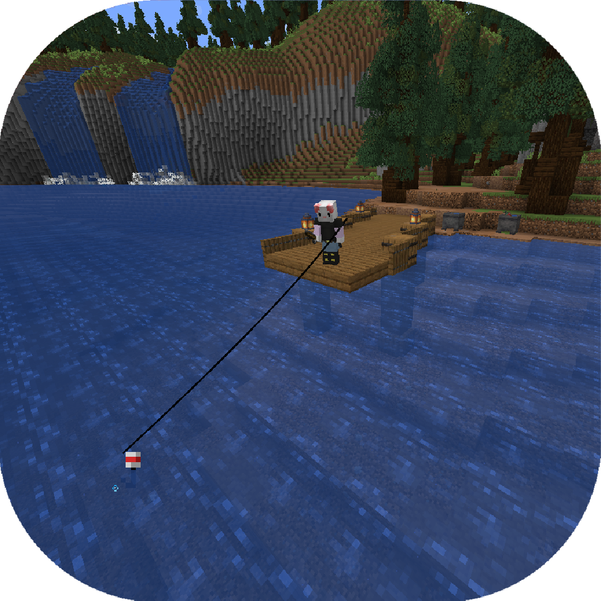

Actual Mods
place it in the mods folder of your minecraft instance
(and make sure you're using the right modloader and version)
MilkNMeth
A collection of twitch chat's ideas all in one mod. Beware of bugs
Datapacks
mods with no modloader required
just put them in the datapack folder of the world save file
(remember to put the datapacks in your resourcepack folder as well if it comes with textures)
Trident Toppler
Replaces drowned's tridents with iron swords, and adds a crafting recipe for tridents
Capable Copper
Changes the powered rail recipe to use copper instead of gold to give copper an actual use,
and retextures them to match
Fishy Fixes
Slightly alters the fishing loot table to make fishing a little more exciting
(and increase treasure catch rates in the end)
